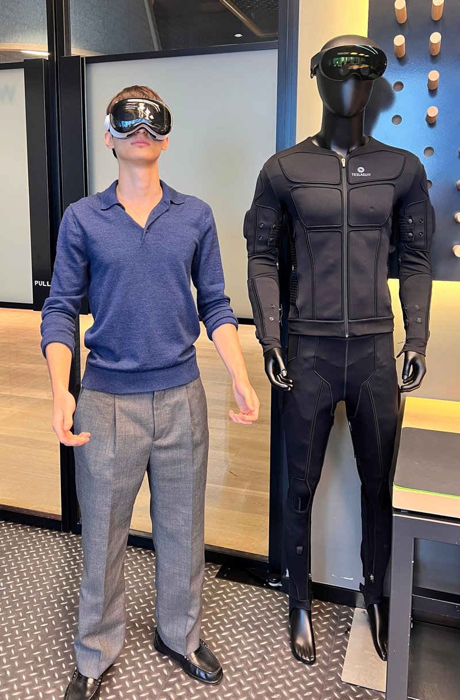

Engineering systems at the intersection of mechanical design, robotics, and computer vision.
I'm a Mechanical Engineering student at Imperial College London with a growing focus on robotics, perception, and autonomy. I like working across the stack - from CAD and mechanical design through to the software and vision systems that let a machine move through the world.
I've worked on computer vision pipelines, robotic arm teleoperation, sensor fusion, and autonomous vehicle design, and I'm always looking for the next hard problem at the boundary of hardware and software.
Co-founder & Head of Automation, Imperial College AUV · London, UK
Skills
Computer Vision & Machine Learning (CV/ML)
- Python
- OpenCV
- YOLO Object Detection
- MediaPipe
- DeepFace
- PyTorch
- Convolutional Neural Networks (CNNs)
- Kalman Filters
Robotics, Autonomy & Deployment
- ROS 2 (Robot Operating System)
- Docker
- Linux
- Edge Deployment
- Git
Mechanical Design
- SolidWorks (CAD)
- GD&T
- Manual Machining
- DFM
Work Experience
-
AI & ML Intern · AudarAI
Sep 2026 - PresentDeveloping and training a 4-billion parameter multilingual open source model.
-
Frontier Labs Intern (Mechatronics & Computer Vision) · PwC
Jun 2026 - Aug 2026Built a real-time perception and teleoperation pipeline for a robotic arm - demoed live to government officials - and led computer vision features for a multi-model vision platform.
-
AI Research Intern · Avanza Solutions
Jul 2025 - Aug 2025Built a Python RAG pipeline and multi-turn chatbot on top of the OpenAI API, and benchmarked open-source LLMs across prompting strategies to inform the team's production model choice.
-
MEP Engineering Intern · Evan Lim Penta
Jun 2025Inspected chilled water piping systems on a 12-storey development against MEP blueprints and building code, working alongside a 200+ person site team.